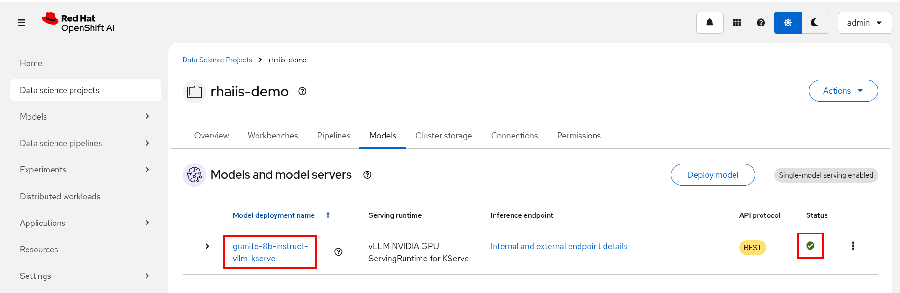
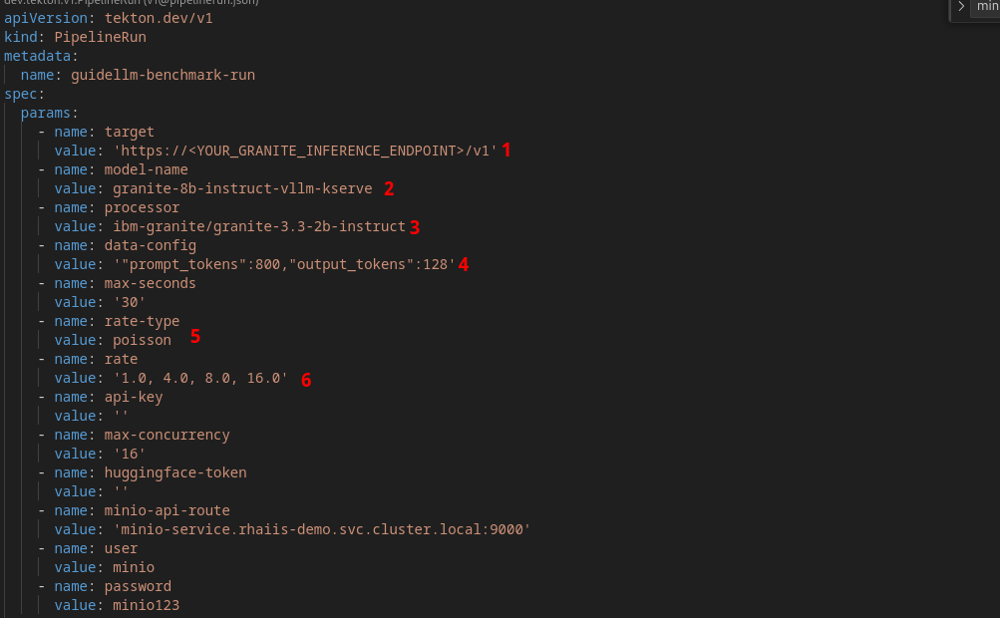
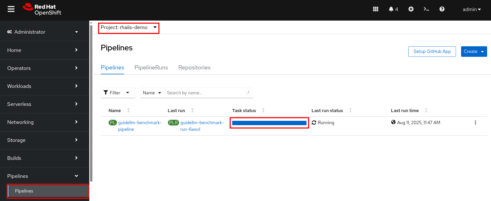
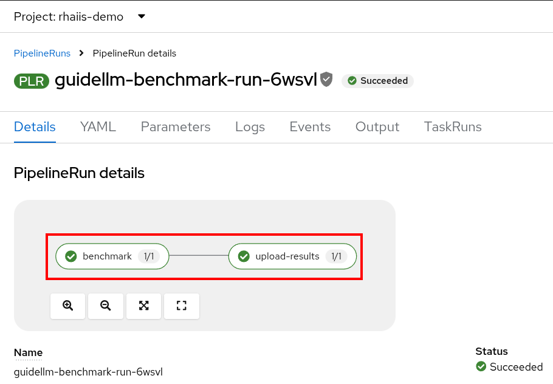
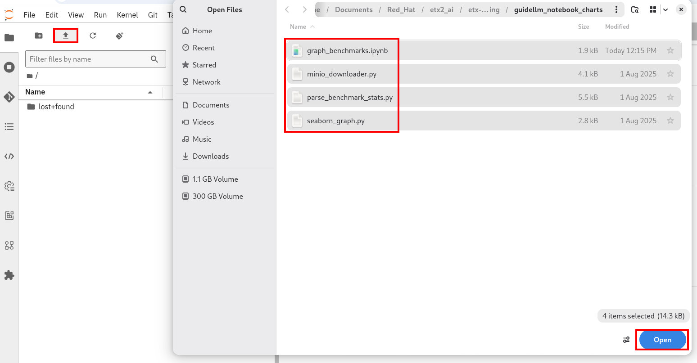
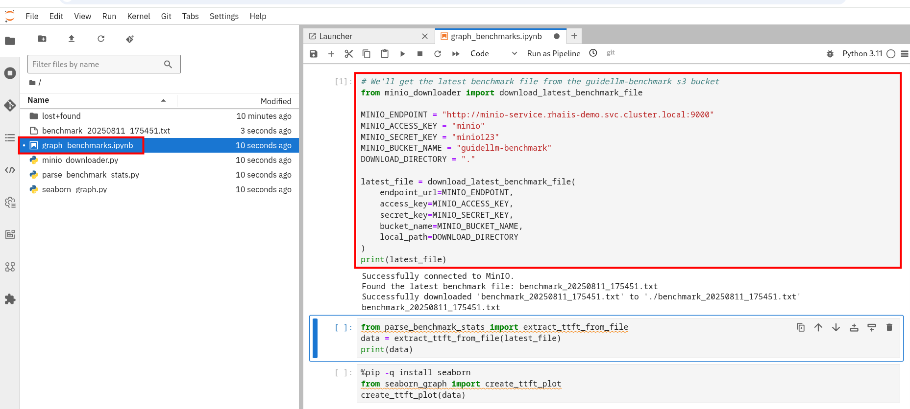
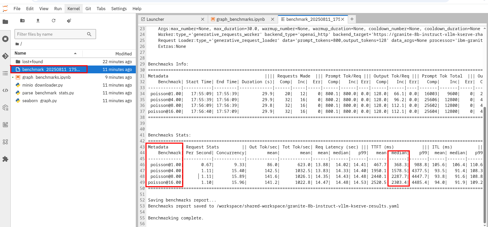
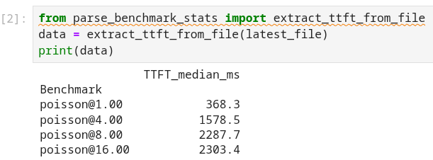
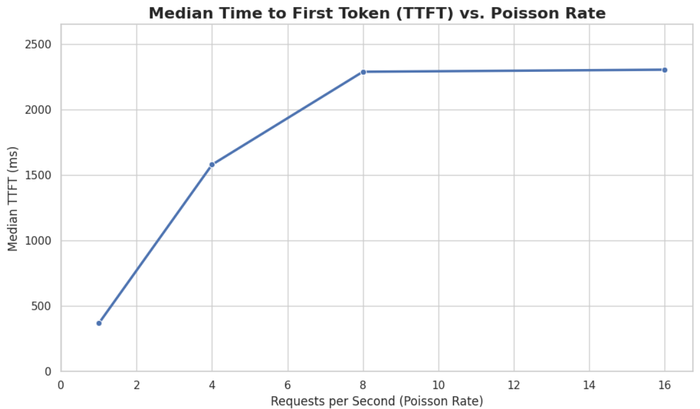

vLLM & Performance Tuning
Before diving into tuning, it’s important to understand the key performance considerations in vLLM:
-
Latency: The time it takes for a single request to complete. Of particular importance here is going to be tracking the Time To First Token - TTFT, which will ensure the user can experience snappier responses.
-
Throughput: The number of requests (or tokens) processed per unit of time. While we’re optimizing for latency, higher throughput often means better resource utilization, which can indirectly help avoid latency spikes due to queuing.
Understanding the deployment YAML
Click for links to git repositories.
Clone the vLLM optimization repository.
git clone https://github.com/redhat-ai-servicesetx-llm-optimization-and-inference-leveraging.gitOpen or Switch to the cloned folder.
cd etx-llm-optimization-and-inference-leveragingClone the guidellm-pipeline repository
git clone https://github.com/jhurlocker/guidellm-pipeline.git-
First we’ll need to re-deploy the granite-3.3-8b-instruct. Open a terminal and login to your OpenShift cluster. Recreate our project name
vllm.oc project vllm -
We’ll be deploying granite-3.3-8b-instruct through the vllm-kserve helm chart again.
-
Open the
workshop_code/deploy_vllm/vllm_rhoai_custom_2/values.yamlfile to view the new arguments we will pass to the deployment. Your new file looks like the one below to facilitate the optimization exercises:deploymentMode: RawDeployment fullnameOverride: granite-8b model: modelNameOverride: granite-8b uri: oci://quay.io/redhat-ai-services/modelcar-catalog:granite-3.3-8b-instruct args: - "--disable-log-requests" (1) - "--max-num-seqs=32" (2) - "--max-model-len=2048" (3)1 --disable-log-requests is used to prevent the logging of detailed request information. By default, vLLM logs various details about each incoming request, which can be useful for debugging and monitoring. However, in production environments or when high performance is critical, excessive logging can consume resources and generate large log files. The --disable-log-requests flag addresses this by turning off the detailed logging of individual requests. 2 --max-num-seqs configuring the server to handle a maximum of 32 concurrent requests in a single parallel computation step (a batch). For example, if 32 different users send a prompt to your chatbot at the same time. 3 --max-model-len argument sets the maximum number of tokens that the vLLM server will allow for a single sequence. This total includes both the user’s prompt and the generated response combined. -
Now that we’ve set the engine arguments we’ll go ahead and deploy the granite model with Helm. Use
helm upgradeif you already have a granite-8b model deployed.helm uninstall granite-8b && \ helm install granite-8b redhat-ai-services/vllm-kserve --version 0.5.11 -f workshop_code/deploy_vllm/vllm_rhoai_custom_2/values.yamlIf you didn’t add the redhat-ai-services helm chart repository to your local helm client, you can do so by running the following command:
helm repo add redhat-ai-services https://redhat-ai-services.github.io/helm-charts/ helm repo update redhat-ai-services -
Login to OpenShift AI and go to your vllm Data Science Project. Wait until the model fully deploys (green check) before continuing.

To watch the pod status from the console run the following command:
oc get pods --watch -n vllm | grep -E '(^NAME|granite-8b-predictor)' -
We’ll be running an OpenShift pipeline with GuideLLM to benchmark our model as we step through the optimizations. Run the below commands to deploy the pipeline, tasks, and s3 bucket.
No need to do this if you executed these commands in module 2. oc apply -f guidellm-pipeline/pipeline/upload-results-task.yaml -n vllm oc apply -f guidellm-pipeline/pipeline/guidellm-pipeline.yaml -n vllm oc apply -f guidellm-pipeline/pipeline/pvc.yaml -n vllm oc apply -f guidellm-pipeline/pipeline/guidellm-benchmark-task.yaml -n vllm oc apply -f guidellm-pipeline/pipeline/mino-bucket.yaml -n vllm -
Open the guidellm-pipeline/pipeline/guidellm-pipelinerun.yaml file. Let’s go through some of the important GuideLLM arguments we’re setting. The pipeline will run a benchmark for 1, 4, 8, and 16 concurrent users.
| Update the "target" and "minio" url parameters with your api endpoints before running the pipeline. |

-
target - Specifies the target path for the backend to run benchmarks against.
-
model-name - Allows selecting a specific model from the server. If not provided, it defaults to the first model available on the server. Useful when multiple models are hosted on the same server.
-
processor - To calculate performance metrics like tokens per second, the benchmark script needs to count how many tokens were generated. To do this accurately, it must use the exact same tokenizer that the model uses. Different models have different tokenizers.
-
data-config - Specifies the dataset to use. This can be a HuggingFace dataset ID, a local path to a dataset, or standard text files such as CSV, JSONL, and more. Additionally, synthetic data configurations can be provided using JSON or key-value strings. Synthetic data options include:
-
prompt_tokens: Average number of tokens for prompts.
-
output_tokens: Average number of tokens for outputs.
-
TYPE_stdev, TYPE_min, TYPE_max: Standard deviation, minimum, and maximum values for the specified type (e.g., prompt_tokens, output_tokens). If not provided, will use the provided tokens value only.
-
samples: Number of samples to generate, defaults to 1000.
-
source: Source text data for generation, defaults to a local copy of Pride and Prejudice.
-
-
rate-type - Defines the type of benchmark to run (default sweep). Supported types include:
-
synchronous: Runs a single stream of requests one at a time. --rate must not be set for this mode.
-
throughput: Runs all requests in parallel to measure the maximum throughput for the server (bounded by GUIDELLM__MAX_CONCURRENCY config argument). --rate must not be set for this mode.
-
concurrent: Runs a fixed number of streams of requests in parallel. --rate must be set to the desired concurrency level/number of streams.
-
constant: Sends requests asynchronously at a constant rate set by --rate.
-
poisson: Sends requests at a rate following a Poisson distribution with the mean set by --rate.
-
sweep: Automatically determines the minimum and maximum rates the server can support by running synchronous and throughput benchmarks, and then runs a series of benchmarks equally spaced between the two rates. The number of benchmarks is set by --rate (default is 10).
-
-
rate - Request rate.
Now let’s launch the pipeline
-
From your terminal, run:
oc create -f guidellm-pipeline/pipeline/guidellm-pipelinerun.yaml -n vllm -
Go to your OpenShift console and view the pipeline run under your vllm project. Click on the bar under Task Status.

Note the two tasks in the pipeline. The first task runs the GuideLLM benchmark and saves the results to a PVC. The second task uploads the results to an s3 bucket. Feel free to click on each task to view the log files.
If the pipeline finishes successfully the tasks will have green check marks like the ones in the image below.

| We’ll view the results of the benchmark in the next section, but feel free to access your Minio instance and look at the files in the guidellm-benchmark bucket. |
View the results in Jupyter Notebooks
-
Go to OpenShift AI and create a workbench with a Standard Data Science notebook. Everything else can be let as the default configuration.
Feel free to use an existing workbench if you already have one running from previous exercises. -
Open your workbench once it starts up and upload all of the files under guidellm_notebook_charts.

-
Open the graph_benchmarks.ipynb notebook and run the first cell. This will download the benchmark file from s3 that was created and uploaded when we ran the pipeline.
Update the "minio" url parameters with your api endpoint, username and password before running the pipeline. 
-
You should now see a benchmark_<TIMESTAMP>.txt file. This should be the latest time stamped benchmark in the s3 bucket. Open that file and in the top toolbar go to View → Wrap Words so you the file is easier to read.
Review the results and notice the two columns highlighted in red. You can see the number of sequences under metadata benchmark and the related median TTFT.

-
Run the next cell to extract the Metadata benchmark and the median TTFTs.

-
Finally, run the last cell in the notebook to graph the median TTFT per number of sequences. All reported times are in milliseconds. Notice how quickly we exceed the "seconds" threshold with even a slight increase in concurrent users—serving LLMs is hard!

-
Rename the benchmark file as
benchmark_1.txt. We’ll use this file in a later exercise.